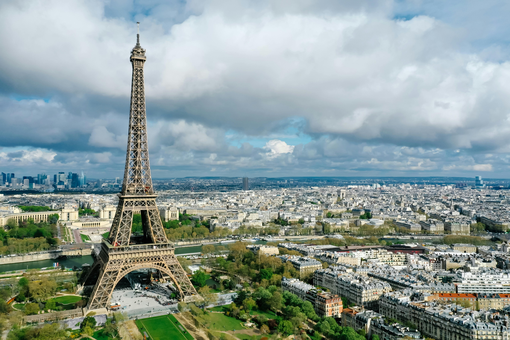

The Eiffel Tower
The Eiffel Tower was designed by Gustave Eiffel for the 1889 Exposition Universelle (World’s Fair) in Paris. It was built to celebrate 100 years of the French Revolution and showcase modern engineering. Standing 330 meters (1,083 feet) tall, it was the tallest man-made structure until 1930. Construction took two years, two months, and five days, using 18,038 iron pieces and 2.5 million rivets. Initially, many Parisians, including Guy de Maupassant, disliked it and called it an “iron monstrosity.” It was originally meant to be dismantled after 20 years, but its use as a radio transmission station saved it. During World War II, the French cut its lift cables to prevent German forces from easily accessing the top. Hitler reportedly ordered it to be demolished, but his command was never carried out. Over time, the Eiffel Tower became a symbol of Paris and a major tourist attraction. It is repainted every seven years with 60 tons of paint to protect it from rust. Since 1985, sparkling lights have illuminated it every evening, adding to its charm. The tower attracts over seven million visitors annually, making it one of the most-visited monuments. It has inspired countless artists, photographers, and filmmakers worldwide. The structure consists of three levels, with restaurants and observation decks offering stunning views. It was initially brown but later painted its iconic “Eiffel Tower Brown” shade. On special occasions, the tower is lit in different colors to celebrate global events. It played a role in early radio transmission and later helped in the development of television signals. The Eiffel Tower has withstood wars, protests, and criticism, emerging stronger each time. Today, it remains an architectural marvel and a timeless symbol of France’s innovation and culture.
